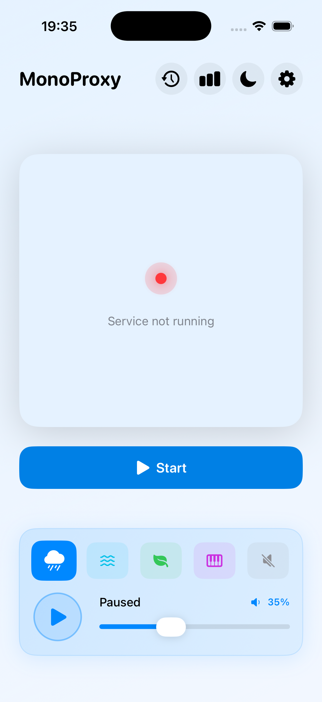
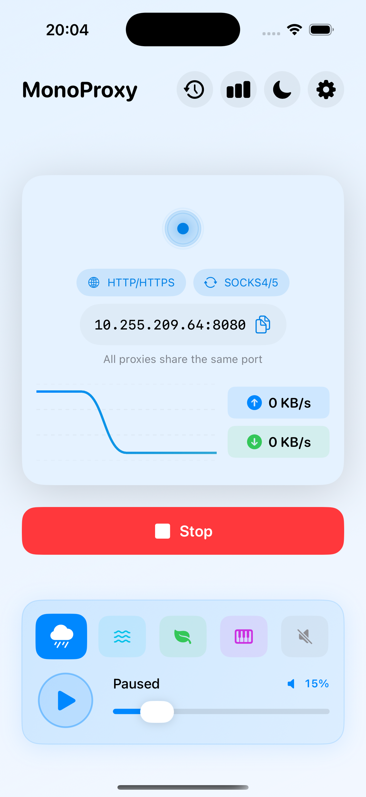
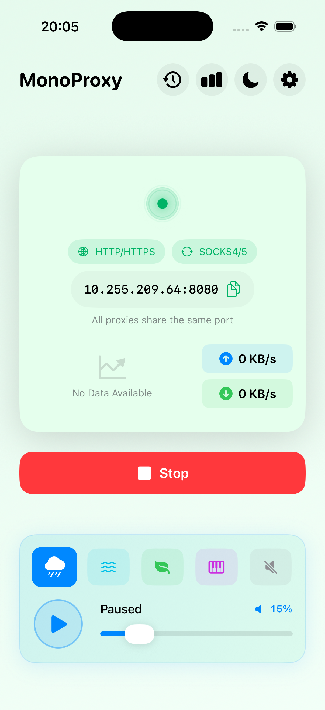
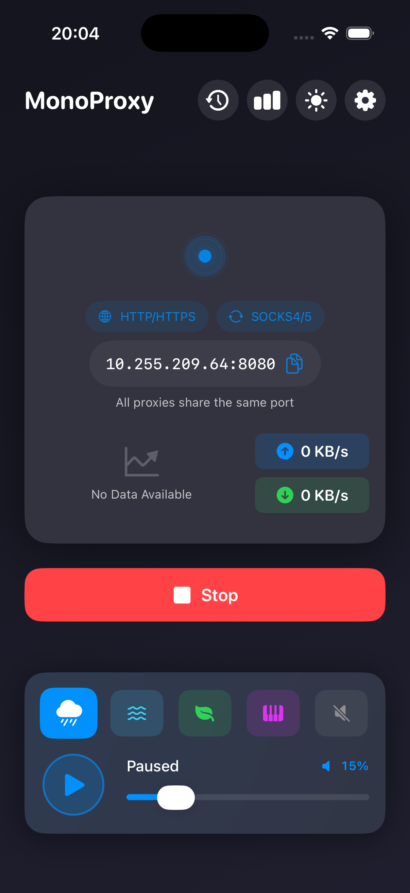
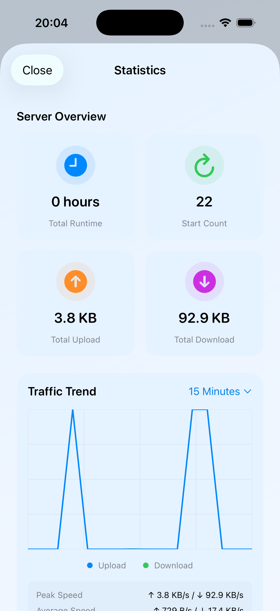

MonoProxy turns your iPhone into a lightweight proxy server — HTTP, HTTPS and SOCKS4/4a/5 all on a single port. Start it in one tap, verify it with the built-in self-test.


No more juggling ports. MonoProxy auto-detects whether a client speaks HTTP, HTTPS or SOCKS and handles it on the same listening address.
Point every client at your-ip:8080 — that's it. All proxies share the same port.
A focused toolset for developers, testers and power users who just want a reliable proxy on the device in their pocket.
HTTP, HTTPS, SOCKS4, SOCKS4a and SOCKS5 served together. The client doesn't need to know the difference.
Turn on username/password authentication when you need it. Credentials stay on device and never touch a log.
Verify HTTP, HTTPS, SOCKS4 and SOCKS5 in one tap. A live Info Output window reveals handshake details when something fails.
Watch real-time upload/download speed, total transfer, runtime and a rolling traffic trend chart.
Choose exactly which network interface the proxy listens on — Wi-Fi, cellular tether or a VPN tunnel.
A tiny built-in player with rain, waves and more — keeps the app alive in the background while you work.
The layout stays perfectly stable whether the service is running or stopped — no jumps, no wasted space.


A dedicated statistics view tracks total runtime, start count, cumulative upload and download, plus a traffic trend you can scan at a glance.

MonoProxy runs entirely on your device. It has no account, no analytics SDK and no backend that could see your data.
SOCKS5 username & password are stored locally, never uploaded, and never written to any log.
No tracking, no profiling, no third-party analytics. Proxied traffic is not logged or stored.
The connectivity check talks to a public test address and never involves your personal data.
Everything happens on-device. There's simply no server for us to peek into.
One port for everything, verified in a tap, private by design.